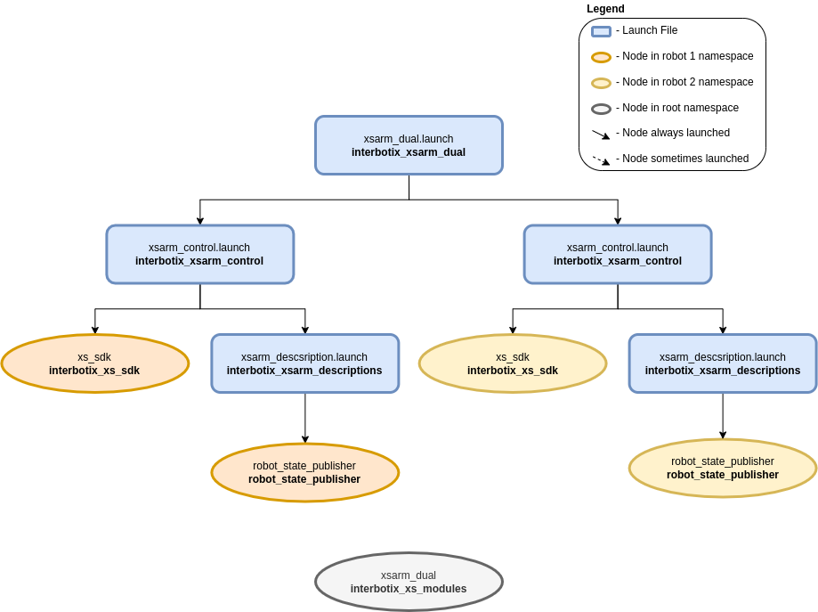

Dual Arm Control
 View Package on GitHub
View Package on GitHub
Overview
This package shows how to get two X-Series arms working together. While the example here is specifically geared for two WidowX 200 arms, there is no limit to the number of arms that can be used (except USB ports on your computer). Also, any of the X-Series arms can be used together - not just WidowX 200 arms. For the purpose of the demo, the Interbotix Python Arm Module is used, so you should familiarize yourself with the functions there and also look at the README in the python_demos directory.
Structure
As shown above, the interbotix_xsarm_dual package builds on top of the interbotix_xsarm_control package. The number of instances that the interbotix_xsarm_control package is included in the xsarm_dual launch file is equivalent to the number of robots being used. See the other packages for descriptions of their nodes.
Usage
To get started, make sure that the U2D2s for both robots are not connected to your computer. Then
connect the U2D2 that you’d like to be robot_1 (as defined in the demo python script).
Afterwards, connect the robot you’d like to be robot_2. The reason for this is that Linux
assigns USB port names starting at 0 and going up. So the first U2D2 plugged in will be called
/dev/ttyUSB0 while the second U2D2 plugged in will be called /dev/ttyUSB1. If you’re
familiar with udev rules, you can create a unique symlink for each U2D2 by finding its serial id
with the following command (make sure you do this with only one U2D2 plugged in at a time)
$ udevadm info -a -n /dev/ttyUSB0 | grep {serial}
The output should look similar to the below but with a different ID…
ATTRS{serial}=="FT4NQ5QO"
Then go to /etc/udev/rules.d and edit the 99-interbotix-udev.rules file by adding the line
below for each of your U2D2s. Note that we’ve used the serial ID above and gave a custom symlink of
ttyRBT1 arbitrarily.
SUBSYSTEM=="tty", ATTRS{idVendor}=="0403", ATTRS{idProduct}=="6014", ATTRS{serial}=="FT4NQ5QO", ENV{ID_MM_DEVICE_IGNORE}="1", ATTR{device/latency_timer}="1", SYMLINK+="ttyRBT1"
Now make sure to update the port name in the ‘modes.yaml’ files in the config directory to
point to your new symlinks. Then unplug/replug the U2D2s to refresh the ports and run the launch
file below.
$ roslaunch interbotix_xsarm_dual xsarm_dual.launch
Then navigate to the scripts directory and run the command
$ python xsarm_dual.py # python3 xsarm_dual.py if using ROS Noetic
To further customize the launch file at run-time (like with a different robot model), look at the table below:
| Argument | Description | Default Value |
|---|---|---|
| robot_model_1 | model type of the first Interbotix Arm such as ‘wx200’ or ‘rx150’ | “” |
| robot_name_1 | arbitrary name that is unique to the first robot arm | “arm_1” |
| base_link_1 | name of the ‘root’ link on the arm; typically ‘base_link’, but can be changed if attaching the arm to a mobile base that already has a ‘base_link’ frame | ‘base_link’ |
| modes_1 | the file path to the ‘mode config’ YAML file for the first robot | refer to xsarm_dual.launch |
| robot_model_2 | model type of the second Interbotix Arm such as ‘wx200’ or ‘rx150’ | “” |
| robot_name_2 | arbitrary name that is unique to the second robot arm | “arm_2” |
| base_link_2 | name of the ‘root’ link on the arm; typically ‘base_link’, but can be changed if attaching the arm to a mobile base that already has a ‘base_link’ frame | ‘base_link’ |
| modes_2 | the file path to the ‘mode config’ YAML file for the second robot | refer to xsarm_dual.launch |
| use_sim | if true, the Dynamixel simulator node is run; use RViz to visualize the robot’s motion; if false, the real Dynamixel driver node is run | false |
| use_dual_rviz | launches RViz to show both arms | false |
| rvizconfig | file path to the config file RViz should load | refer to xsarm_dual.launch |